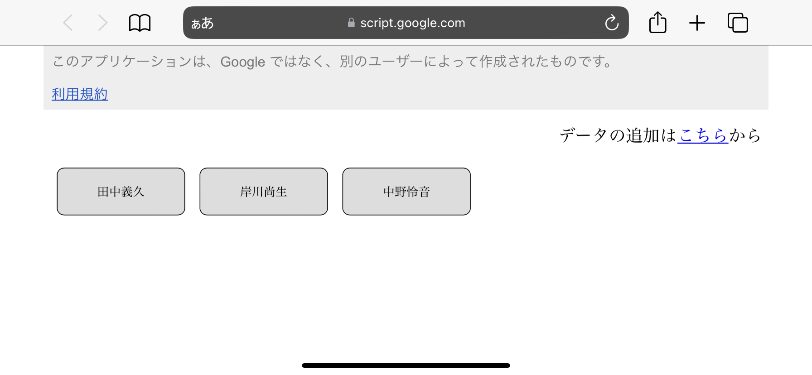
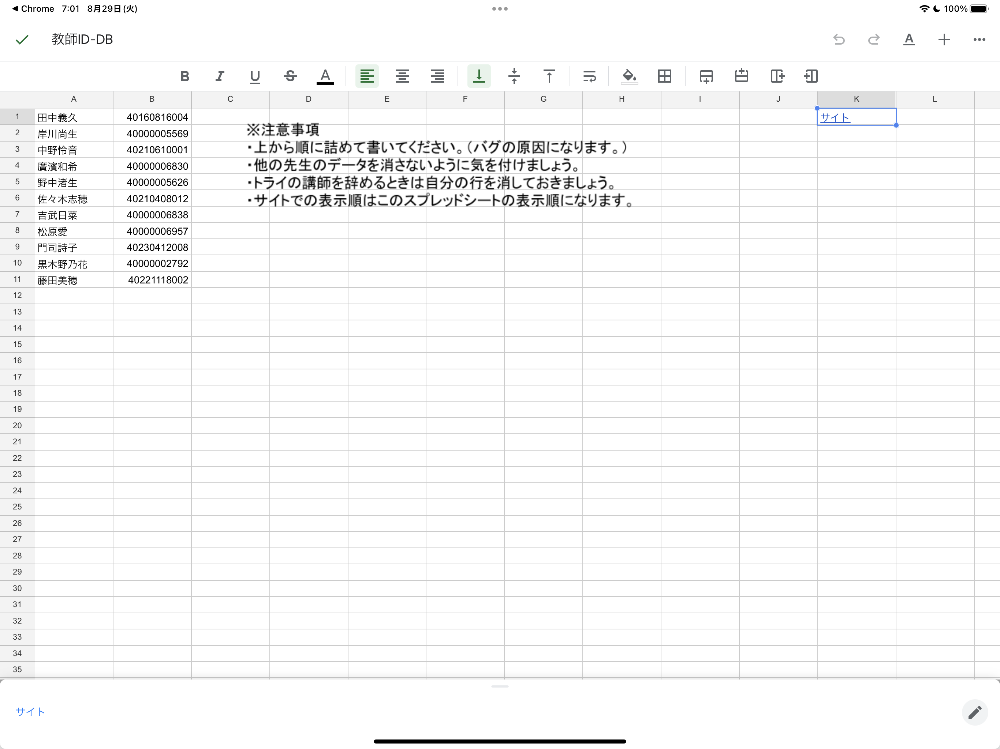

下に「Tryworks Login」と書かれたアイコンをタップします。
アイコンの模様はブースによって違います。
アイコンがない場合は
こちら
。
このような画面が開きます。

画面右上の「データの追加はこちらから」の中の「こちら」の部分をタップします。
このようなスプレッドシートが開くので、

A列に名前、B列に教師IDを入力します。
スプレッドシートの仕様上、保存されない場合があるので登録したら動作の確認
（名前をタップしたら教師IDがペーストできることの確認）
をお願いします。
K1の「サイト」をタップするとこの画面に戻り、
名前が追加されているはずです。
名前がない場合はリロードしてください。それでも追加されない場合はもう一度登録お願いします。